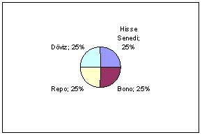
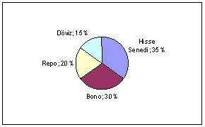

KAZANDIRAN YATIRIM PRENSİPLERİ
Paranızı ikiye katlamanın en kolay ve güvenli yolu,
bir kere katlayıp cebinize koymaktır.
Frank McKinney Hubbard
Yatırım yaparken amaç riskinizi en düşük seviyeye çekmek ve kâr potansiyelinizi de en yüksek seviyeye çıkarmaktır. Basın yayın organlarında hemen her hafta "kaçırılmaması gereken yatırım", "fiyatı en ucuz hisse senetleri", "gayri menkulde en fazla değer kazanacak yerler" gibi manşetlere rastlayabilirsiniz. Bunların bir kısmı gerçekten fırsat olabilir, ama bilmelisiniz ki önemli bir bölümü gereken yatırımlar yapıldıktan sonra haber olur. Yatırımcı psikolojisini de düşünecek olursak, bir hisse senedinin fiyatı gerçekten ucuzsa ve fırsatsa bile, gazeteye çıkıp da artık bütün Türkiye ondan haberdar olduktan sonra değeri kalmaz. Piyasada bir ihtiyacı fark ettiniz ve bu alana yönelik yatırım yaptınız. Eğer bu haber olarak geniş kitlelere duyurulursa ve onlar da bu yatırımı yaparsa ne olur? Yoğun rekabet yaşanır, fiyatlar ve dolayısıyla kâr marjları düşer, para kazanmak için yaptığınız bir iş külfet haline gelmiş olur. Bu durumda kimsenin etkisi altında kalmadan yatırımlarınıza yön verebilmeniz için toplam 7 adet yatırım prensibini sizinle paylaşacağım.
Varlık Dağılımı
Varlık dağılımı, yatırım bütçenizin ne kadarlık dilimini hangi yatırım aracına ayıracağınızı belirlemektir. Kendi yatırım portföyünüzü oluşturmanın ilk aşamasıdır. Varlık dağılımı yaptığınızda aşağıdaki gibi bir portföye sahip olursunuz:

Şekilden de anlaşılacağı üzere varlık dağılımı hangi alanlara yatırım yapacağınızı belirler. Sizin borsaya yatırım yapıp yapmayacağınızı varlık dağılımı belirler ama hangi hisse senedine yatırım yapacağınız varlık dağılımının konusu değildir. Bunun bir başka özelliği de varlık dağılımının piyasanın değişen koşullarına rahatlıkla ayak uydurabilmesidir. Portföyünüzdeki hisse senetleri düştü ve döviz yükseldiyse, döviz portföyünüzü azaltıp hisse senedi portföyünüzü azaltabilirsiniz. Bu durumda hem döviz yatırımlarınızdan elde ettiğiniz kârınızı realize etmiş olursunuz, hem de hisse senedi portföyünüzün maliyetini düşürmüş olursunuz. Dolayısıyla varlık dağılımı son derece esnek bir kurgudur ve zamanla değişkenlik gösteririr. Aşağıda döviz ağırlığı azaltılıp hisse senedine kaydırılmış varlık dağılımı tablosunu görüyorsunuz.

Varlık dağılımına gayri menkul, altın gibi diğer yatırım araçlarını da ekleyebilir ya da yukarıdaki örnekte var olan yatırım araçlarından bir ya da birkaç tanesini çıkarabilirsiniz. Bunu yapmaktaki temel amaç, riskinizi azaltabilmektir.
Farklılaştırma
Farklılaştırma, varlık dağılımı ile karıştırılabilen ancak tamamen farklı bir kavramdır. Yumurtaları farklı sepete koymak varlık dağılımıdır, sepete hangi yumurtaların koyulacağına karar vermek ise farklılaştırmadır. Varlık dağılımındaki hisse senedi kategorisinde, hangi hisse senetlerine yatırım yapacağınıza karar vermek ve farklı hisse senetlerine sahip olmak farklılaştırmadır. Gayri menkul sektöründe hem bir arsaya hem de bir konuta yatırım yapmak farklılaştırmadır.
10.000 lira paranız olduğunu düşünelim ve yatırım yapmak istiyorsunuz. Eğer bu para ile repo yaparsanız yıllık net %10 getiri ile beş yılda 16.105 lira değere ulaşır. Aynı parayı farklı yatırım araçlarında değerlendirdiğinizi düşünelim:
Şimdi bu rakamları hep birlikte değerlendirelim.
Farklılaştırma Olmadan | Farklılaştırma İle | |
Repo | 16.105 | 4.026 |
Kumar | - | 0 |
Hisse Senedi | - | 9.282 |
Hazine Bonosu | - | 5.028 |
Toplam | 16.105 | 18.336 |
Tabloda da görüldüğü gibi farklılaştırma sayesinde 2.500 lirasını kaybettiğiniz bir yatırım bile nihai olarak daha yüksek bir değere ulaşabiliyor. Aynı zamanda bunu yaparken riskinizi de azaltmış oluyorsunuz. Böylece farklılaştırmanın gücünü kendi adınıza kullanma şansına sahip oluyorsunuz. Eğer bahis oyunlarıyla da ilgilenmiyorsanız kazanç potansiyelinin size tabloda gösterdiğim rakamlardan çok daha yüksek olacağını unutmayın.
Risk Toleransını Belirleme
Bugüne kadar birçok insanın kişisel finansı ile ilgili sorusuna cevap verdim. Sorunları olanların sorunlarını çözebilmek için elimden geleni yaptım. Ancak bazı sorular vardır ki bunun cevabını ne ben ne de bir başkası veremez. Bu sorulardan birkaç örneği sizinle paylaşayım:
Bu sorular daha uzayıp gidiyor. Bu sorular öyle sorular ki, soruyu soran kişi sizden bir cümleyle cevabını duymak istiyor, bu da yetmezmiş gibi duyduğu cevap mümkünse hiçbir şey yapmasına gerek kalmadan onu zengin etsin istiyor. Ben de gerçekten tek cümlelik bir cevap veriyorum. "Eğer sorunuzun cevabını biliyor olsaydım, parasal zekâ seminerlerini sunmaz, gidip bire on kazandıran yatırımları yapıyor olurdum". İşin ilginç yanı, eğer yatırım yapmanın sihirli bir formülü olsaydı zaten yatırım yönetimi üzerine bu kadar çok yazılıp çizilmesine ya da üniversitelerde bunun bir bilim dalı olmasına gerek kalmazdı. İnsanları zengin ya da fakir eden faktörlerden biri de paraya karşı takındıkları tavırdır. Eğer siz bugün çalışıp yarın zengin olmayı umuyorsanız ya da bugün yatırım yapıp yarın ikiye üçe katlamasını umuyorsanız, şansınızı kaybetmişsiniz demektir. Yukarıda örneğini verdiğim soruların tek günlük olmasa da orta ve uzun vadeli düşünen insanlar için cevapları var, ama bu cevaplar kişiden kişiye değişiyor. Bunun için verdiğimiz bir finansal danışmanlık hizmeti var ve bu hizmetin sonunda hizmeti alan kişiye finansal bir rapor sunuyoruz. Çünkü herkesin sahip olduğu risk toleransı farklıdır. Her yatırımcı üç risk grubundan birine girer. Düşük, orta ve yüksek. Risk grubunuzu da yaşınız, medeni durumunuz, çocuk sayınız gibi birçok faktör etkiler. Takdir edersiniz ki bir insanın risk grubu hakkında gözünün içine bakarak fikir sahibi olamazsınız.
Düşük risk kategorisindeki birisinin portföyünün değer kaybetmesine tahammülü yoktur. Bu gruptaki yatırımcılar genellikle tahvil, bono gibi uzun vadeli ve fiyatlarında dalgalanmanın fazla olmadığı yatırımları tercih ederler. Kaybetme riskini düşürebildikleri kadar düşürürler ancak bu aynı zamanda kazanç potansiyelinin de düşmesi anlamına gelir. Düşük risk grubundaki bir yatırımcı için kazanmak ya da kaybetmekten daha önemli olan, yatırımının değerini korumasıdır. Orta risk grubundaki bir yatırımcı ise risklere biraz daha açıktır. Ancak fiyat dalgalanmalarına ve risklere açık olmak orta risk grubundaki bir yatırımcı için bile çok zordur. Dolayısıyla sadece düşük seviyedeki dalgalanmalara tahammül edebilirler. Yüksek risk grubundaki bir yatırımcı için ise fiyat dalgalanmalarında yaşanan hızlı değişimler çok önemli değildir. Onun hedefi yüksek kazanç elde etmektir ve bunun için de yüksek kayıp riskini göze alması gerektiğini bilir.
Araştırma
Varlık dağılımını yaptınız, portföyünüzü farklılaştırdınız ve risk derecenize göre size uygun olan yatırım araçlarını seçtiniz. Bundan sonra sırada hangi yatırım aracına paranızı yatıracağınıza geliyor. B tipi fon almaya karar vermiş olabilirsiniz ama onlarca B tipi fon var. Onlarca hisse senedi, onlarca tahvil ve bono. Hangisini ne şekilde seçeceksiniz? Parasal zekânın ilkelerinden bahsederken bilginin güç olduğunu söylemiştim. Burada riskinizi düşürüp kazancınızı yükseltmek için araştırma yapmanız gerekiyor. Peki araştırmayı nasıl yapacaksınız? Bir bankacıyla konuşursanız yatırım fonlarının cazibesinden, emlakçıyla konuşursanız gayri menkulün getirisinin ne kadar yüksek olduğundan, broker ile konuşursanız da borsada müthiş bir potansiyel olduğundan bahsetmesi kuvvetle muhtemeldir ve hepsi de doğru olabilir. Çünkü onlar yatırım araçlarının geçmişteki performansına bakarak size son bir ya da birkaç yıl içinde ne kadar iyi bir getiri sağladığından dem vurabilirler. Ancak kendinize en uygun aracı finansal durumunuza ve risk toleransınıza göre seçebilirsiniz ve bunu en iyi siz yapabilirsiniz. Bu konuda biraz kafanızı yormanızı, internetten, gazete ve dergilerden araştırma yapıp piyasayı detaylı olmasa da takip etmenizi tavsiye ederim. Bunun için günlerinizi vermenize kesinlikle gerek yok, ama ayda birkaç saatinizi bu işe tahsis ederseniz kazanan siz olursunuz.
Vergiler
Vergilerden ve onların yatırım kararlarımızı nasıl etkilediğinden ilk bölümde bahsettim. Yatırım yaparken elde ettiğiniz kazancın ne kadarını vergi olarak ödeyeceğinizi bilmek çok önemlidir. Getiri potansiyeli olarak çok cazip görünen bir yatırım, vergileri yüksekse vasat bir performansa sahip olabilir. Vergiler konusunda altın kural, vergi oranı ne olursa olsun yaptığınız yatırımın sonunda elde ettiğiniz kazancın yüksek olmasıdır. Diğer bir ifadeyle %90 kazandırıp %70’i vergi olarak ödenen bir yatırım, %10 kazandıran ama vergisi olmayan bir yatırımdan daha caziptir.
Ortalama Maliyet
Ortalama maliyet, paranızın hepsini bir kerede yatırıma yönlendirmeyip, belli dönemlerde yatırım yapmayı ve böylece yatırımı uzun vadeye yayarak riski azaltmayı amaçlar. Daha çok borsada hisse senedi yatırımı yaparken kullanılır. Ortalama maliyet prensibini kullanarak paranızı tamamını bir kerede yatırıma yönlendirmektense sabırlı bir şekilde yatırım yapmanız durumunda fiyat dalgalanmalarından en az seviyede etkilenmiş olursunuz. Diyelim 300 liranız var ve bir hisse senedine yatırım yapacaksınız. Her ay 100 lira yatırım yaptığınızı düşünelim.
Ay | Yatırım Miktarı | Hisse Fiyatı | Hisse Adedi | Ortalama Maliyet |
1 | 100 | 10 | 10 | |
2 | 100 | 5 | 20 | |
3 | 100 | 2 | 50 | |
Toplam | 300 | 80 | 3,75 |
Yukarıdaki durumda bir hisse senedine paranızın tamamını yatırmak yerine her ay 100 lira yatırım yaptığınızı varsayıyorum. Bu durumda ilk ay 10 liraya aldığınız hisse senedini ikinci ay değeri 5 liraya düşerse o fiyata üçüncü ay ise değerinin 2 liraya düştüğünü varsayarak satın alabilirsiniz. Bu durumda toplam 300 lira yatırımla 80 adet hisse senedi almış olursunuz ve yatırımınızı uzun vadeye yaydığınız için hem riskinizi düşürmüş hem de maliyetinizi 3,75 liraya çekmiş olursunuz. Hisse senedi fiyatları dalgalanır, dolayısıyla fiyatın yönü tekrar yukarıya döndüğünde 4 liraya bile yükseldiğinde satsanız kâr elde etmiş olursunuz. Ortalama maliyetin fiyat odaklı yaklaşımını sizlerle paylaştım. Bunun dışında iki tane daha ortalama maliyet yöntemi var. Bunlardan biri riski sevmeyenler için. Buna göre elde ettiğiniz gelirin bir kısmını yatırım fonu, hazine bonosu gibi riski düşük olan ve sabit getirisi olan enstrümanlara yatırabilirsiniz. Elde ettiğiniz getiri ile de ortalama maliyet tekniğini kullanarak hisse senedi daha yüksek riskli araçlara yatırım yapabilirsiniz. Burada dikkat ederseniz anaparanıza dokunmuyorsunuz, o sabit kalıyor ve her ay da yükseliyor, sadece anaparanızın getirisini riske ediyorsunuz. İkinci bir yöntem ise her ay belli bir miktarda para ile yatırım yapmak yerine belli bir miktarda adet ile yatırım yapmaktır. Buna göre de her ay düzenli olarak bir hisse senedinden 10 adet alabilirsiniz. Hisse senedinin adet fiyatı 5 lira ise 10 tanenin toplam maliyeti 50 lira olacaktır. Fiyat bir dahaki ay 6 liraya yükselirse maliyetiniz 60 liraya yükselir, sonraki ay 4 liraya düşerse toplam maliyetiniz de 40 liraya düşmüş olur. Bu taktiği kullanmak biraz daha esnek bir bütçeye sahip olmayı gerektirir ve daha zordur, ama getiri potansiyeli daha yüksektir.
Ortalama maliyet prensibini kullanırken iki sorunla karşılaşabilirsiniz. Bunlardan birincisi, yatırım yaptığınız aracın fiyatı düşerken onu satın almaya devam etmek istemezsiniz. Hiçbirimiz fiyatı düşmekte olan bir yatırım aracını almaktan hoşlanmayız. Bu insan psikolojisine de yatırım psikolojisine de ters bir durum gibi görünebilir. Bu sorunun çözümü düşen fiyatı umursamadan yatırım yapmaya devam etmektir. Göreceksiniz ki düşüş önce duracak, sonra da yükselişe geçecektir. Karşılaşabileceğiniz ikinci sorun ise düzenli olarak yatırım yapmaya devam etmemektir. Ortalama maliyet tekniğini kullanabilmenin en önemli şartı yatırımınızı dönemlere yaymak ve bunu devam ettirmektir. Eğer yatırım yapmaya devam etmezseniz bu prensip sizin aleyhinize çalışıp para kaybetmenize neden olabilir. Yatırımınızı devam ettirebilmek için ise fiyat değişimi yüksek olan, hızlı iniş ve çıkışları olan hisse senetlerini seçebilirsiniz. Bir hisse senedinin fiyat değişiminin yüksekliği beta değerinin yüksek olmasıyla ölçülür. Beta değeri ise hisse senedinizin fiyat değişiminin, genel olarak borsanın tamamındaki fiyat değişimine oranıyla ölçülür:
Hisse senedinizin % olarak fiyat değişimi
Borsadaki % olarak fiyat değişimi
Borsada %25 oranında bir artış yaşandığında sizin hisse senediniz %50 artmış ise hisse senedinizin beta değeri %50 / %25 = 2 olarak hesaplanır. Bu da hisse senedinin piyasaya göre fiyat hareketlerinin iki kat daha değişken olduğunu gösterir. Risk almaktan hoşlanan bir yapınız yoksa ya da risk grubunuz orta ya da düşük seviyede ise değişken fiyat hareketleri olan hisse senetlerine yatırım yapmak yerine hisse senedi ağırlıklı yatırım fonlarına yatırım yapabilir ve ortalama maliyet prensibini bu fonlara uygulayabilirsiniz.
Fiyat Düşüşlerine Karşı Soğukkanlılık
Yatırım yaparken dikkat edilmesi gereken son prensip ise fiyat düşüşlerinde duygusal davranmamaktır. Duygusallık, yatırım yaparken sizi ciddi kayıplara uğratabilir. Yatırım yönetiminde vade çok önemlidir. Yatırım yaparken hangi vadede yatırım yapmak istediğinizin kararını vermeniz durumunda doğru yatırım araçlarını seçebilmeniz kuvvetle muhtemeldir.
Kazandıran yatırım prensiplerini uygulamaya geçirmek konusunda size son tavsiyem, paranızın tamamını bir kerede yatırıma yönlendirmenizdir. Elinizde yatırım yapabileceğiniz bir para varsa bunu atıl olarak tutmak size zaman ve para kaybettirir. Yalnız burada bir yanlış anlaşılma olmaması için tekrarlıyorum, paranızın tamamını bir kerede yatırıma yönlendirmeniz hepsini bir hisse senedine ya da borsaya yatırmanız anlamına gelmiyor. Varlık dağılımı ve farklılaştırma yapıp, gerekli araştırmaları tamamladıktan sonra ortalama maliyet stratejinizi de belirleyip istikrarlı bir yatırım programını başlatmaktan bahsediyorum.